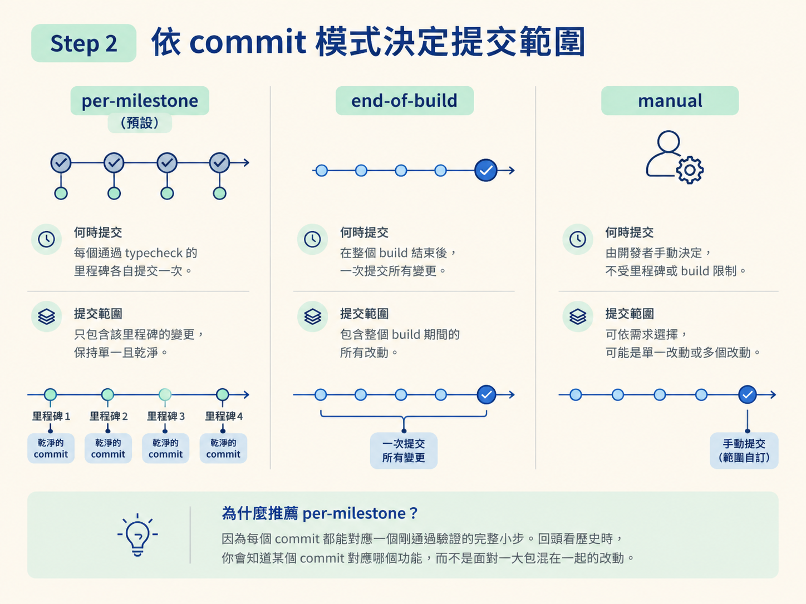
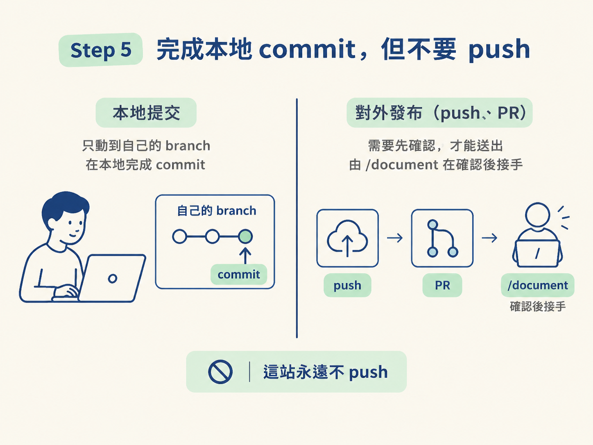

這一站要完成三件事：找出可以放心提交的時機、依設定寫出符合規定的 commit 訊息，並確認 push 與 PR 不會被錯誤地交給 /develop。
開始前，上一節應該已經打開 integration，而且你讀過設定裡的 commit 模式。你不需要先處理整個 repo；只要從一個已完成、準備驗證的里程碑開始。
功能會動，不代表現在就該 commit。先依序確認兩件事：
如果兩個答案都是「是」，現在就是天然提交點；里程碑還沒完成，或 typecheck 沒通過，都先不要提交。
commit 一旦寫進歷史，就會被當成「當時這個狀態是正確的」。半成品或沒驗證過的狀態進了歷史，只會讓之後的 debug 與 review 多出噪音。
commit 模式決定提交範圍確認里程碑可以落地後，再看設定裡的 commit 模式。它管的是「何時提交」和「一次提交多少」，跟能不能跳過完成與 typecheck 檢查無關。
| 模式 | 什麼時候提交 | 提交的範圍 |
|---|---|---|
per-milestone（預設） | 里程碑落地且 typecheck 變綠時，主動問你要不要提交 | 只提交那個里程碑相關的檔案 |
end-of-build | 整個 build 落地時提交一次 | 這次 build 的所有改動 |
manual | 永遠不主動提交 | 由工程師自己決定 |
若是 per-milestone，當里程碑完成且 typecheck 通過時，你可以接受或拒絕「要不要提交」的詢問。若是 end-of-build，先繼續完成整個 build，等全部落地後再提交。若是 manual，這一站不會主動替你提交。
per-milestone 是預設模式，因為每個 commit 都能對應一個剛通過驗證的完整小步。回頭看歷史時，你會知道某個 commit 對應哪個功能，不必面對一大包混在一起的改動。

無論使用哪個模式，都遵守同一條規則：只提交真的落地、而且通過 typecheck 的內容。
在 per-milestone 模式下，提交範圍是那個里程碑相關的檔案，不是整個工作區。即使你還有其他未完成的改動，也不能把它們順手混進這次乾淨的提交。
所以動手前要先確認工作區狀態：起點乾淨，這次 commit 才能清楚對應到這個里程碑。
提交訊息固定由兩部分組成：
Co-Authored-By trailer。型別依工作性質選擇，例如 feat、fix、refactor、test 或 chore。可以選擇性加上功能範圍，摘要則用祈使句描述這個 commit 做了什麼。
feat(auth): add session persistence
Co-Authored-By: Claude Opus 4.8 (1M context) <noreply@anthropic.com>逐行檢查：
feat 表示這是一個新功能。(auth) 是可選的功能範圍。add session persistence 是祈使句摘要，描述做了什麼。Co-Authored-By 是必需的 trailer，用來記錄共同作者。不要在 commit body 補上「為什麼要這樣做」。這個理由應該留在 spec 與 PR；commit 保留「做了什麼」即可。這樣理由只有一個來源，不會在不同文件之間逐漸對不起來。
完成本地提交後，先停在這裡。這一站永遠不做 git push。
本地的 branch 與 commit 只是建議；push 與 PR 一律要先確認，而且 PR 是/document的工作，不屬於/develop。
寫入本機歷史和對外發布是兩個不同的決定。前者只動到自己的 branch 與 commit；後者會把改動送出去、影響到別人，所以要保留確認這一步。
所以這一站最多會問你「要不要提交這個里程碑」。它不會替你 push，也不會替你開 PR。等整個改動完成、準備寫 PR 時，才由 /document 在確認後接手。

如果 integration 已開啟，/develop 的總結會多出一行，說明目前所在的分支與提交內容，例如：
feat(auth): … · 3 commits
若模式是 manual，總結會註明提交由你手動處理。若 integration 關閉，這一行不會出現，總結也不會提到 git。
驗收時看兩件事：有提交時，總結有沒有指出分支與提交；不管哪種模式，都不會自動 push 或開 PR。這樣就代表本地 commit 和對外發布已經分開。
先確認里程碑已落地，再確認 typecheck 通過；接著依commit模式決定提交時機與範圍。per-milestone只提交該里程碑的檔案，end-of-build等整個 build 完成後提交，manual完全不主動提交。訊息是一行 Conventional Commit 主題，加上必需的Co-Authored-Bytrailer。完成本地 commit 後停下來：這一站不 push，push 與 PR 由/document在確認後處理。